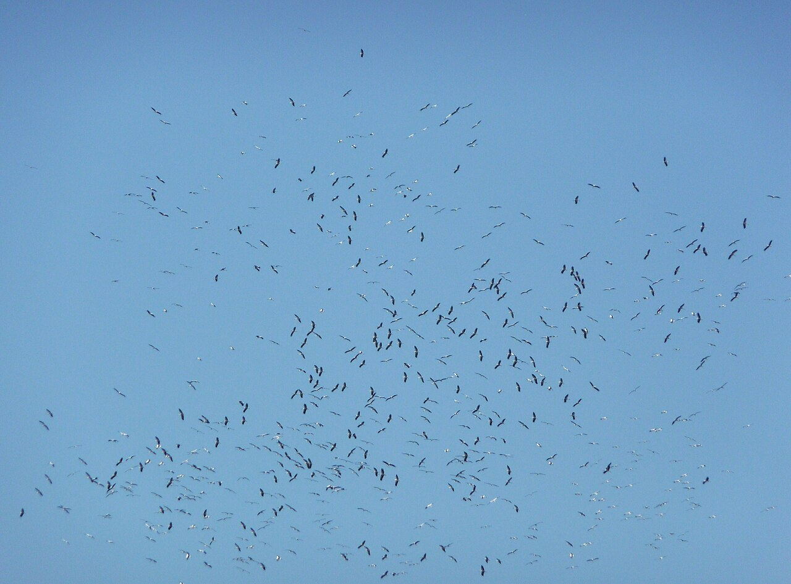

مع تواصل هجرة الخريف، تتعدد جبهات حماية الطيور حول البحر المتوسط: تحرّك قضائي في صقلية، وضبط شباك في البقاع اللبناني، ودفاع عن التعاون الميداني في قبرص، وتحذيرات من حصائل صيد ضخمة في ليبيا. وقائع مختلفة تلتقي عند حاجة واحدة: تأمين رحلة الطيور بين مواطن تكاثرها ومناطق إشتائها.
صقلية: القضاء يوقف الصيد المبكر للقمري
في صقلية، حققت منظمات حماية الطبيعة تقدمًا قضائيًا لصالح القمري الأوروبي. وبحسب بيان نشرته منظمة LEAL في الرابع من أيلول، أكد مجلس القضاء الإداري للمنطقة وقف صيد هذا الطائر خلال فترة الافتتاح المبكر للموسم، إثر تحرك قضائي قادته LEAL وPro Natura، بدعم من اللجنة الألمانية لمناهضة قتل الطيور «CABS» وGreen Impact.
ويتعلق القرار بالصيد المبكر للقمري تحديدًا، ولا يعني حظر الصيد كله في الجزيرة. وتبرز أهميته في الحد من الضغط على الطائر خلال مرحلة حساسة من رحلته الموسمية.
لبنان: أكثر من عشرين ألف متر مربع من الشباك
وفي البقاع اللبناني، أعلنت قوى الأمن الداخلي ضبط شباك صيد غير قانونية بلغت مساحتها الإجمالية ٢٠٬٦٤٠ مترًا مربعًا، في حملة نفذتها مفرزة استقصاء البقاع التابعة لوحدة الدرك الإقليمي.
وتتزامن الحملة مع مخيم الحماية الخريفي الذي تنفّذه CABS بالتعاون مع «مركز الشرق الأوسط للصيد المستدام ومكافحة الصيد الجائر» — مكشاب «MECSHAP» — في لبنان، في ظل تعاون ميداني يومي بين الجهات المشاركة في المخيم وقوى الأمن.
وكانت CABS قد أعلنت انطلاق المخيم في الثامن من أيلول، رغم الظروف الإقليمية المتوترة، لمتابعة مسارات الهجرة ومكافحة اصطياد الطيور بالشباك والعصي اللاصقة.

قبرص: حماية التعاون مع السلطات
وفي قبرص، وصل النقاش إلى البرلمان. فقد دعت CABS النواب، قبيل اجتماع للجنة البيئة في منتصف أيلول، إلى حماية التعاون بين المنظمات الأهلية والشرطة والجهات المختصة بمكافحة الصيد الجائر، محذرة من محاولات تعطيله.
وتكشف القضية أن حماية الطيور لا تعتمد على العمل الميداني وحده، بل على استمرار الإطار المؤسسي الذي يتيح رصد المخالفات وملاحقتها.
ليبيا: حين تتحول الحصيلة إلى منافسة
وعلى الضفة الأفريقية، حذرت منظمة «البراري» لصون الطبيعة من صور متداولة لحصائل صيد كبيرة للقمري الأوروبي، قالت إن إحداها تجاوزت ٧٠٠ طائر، بحسب ما نقلته بوابة «الوسط».
وحذرت المنظمة من تحول عرض هذه الحصائل إلى منافسة تشجع على المزيد من الصيد، مطالبة بالتحقق من ظروفه وقانونيته. كما أثارت مخاوف من الاتجار بالطيور، وهي مسألة تستدعي التحقيق ولا تثبتها الصور وحدها.

حماية تتجاوز الحدود
تختلف الوقائع والجهات والوسائل، لكن القضية تتجاوز حدود كل بلد. فالطيور تعبر مسارات مترابطة، وحمايتها في محطة من رحلتها تظل ناقصة إذا واجهتها الشباك أو الصيد غير القانوني في محطة أخرى. من المحكمة إلى الدورية الميدانية، تتكامل أدوات الحماية لضمان استمرار الهجرة وصون الطبيعة.